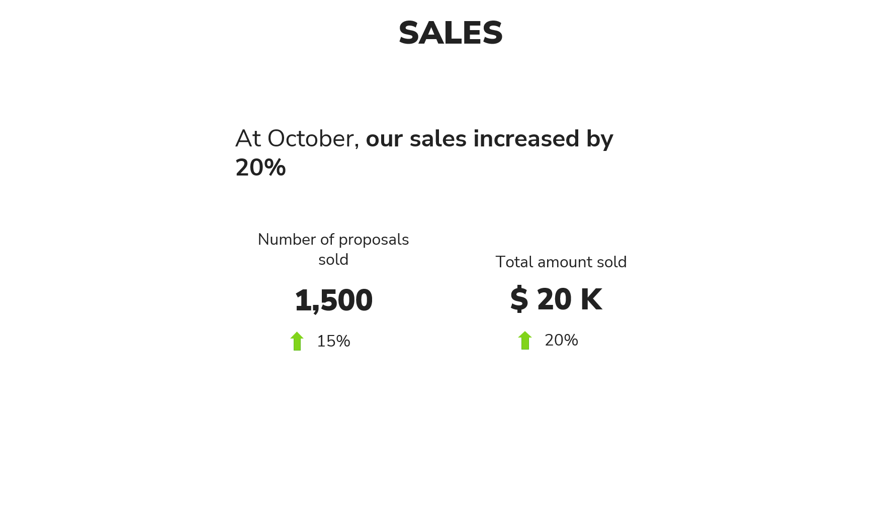
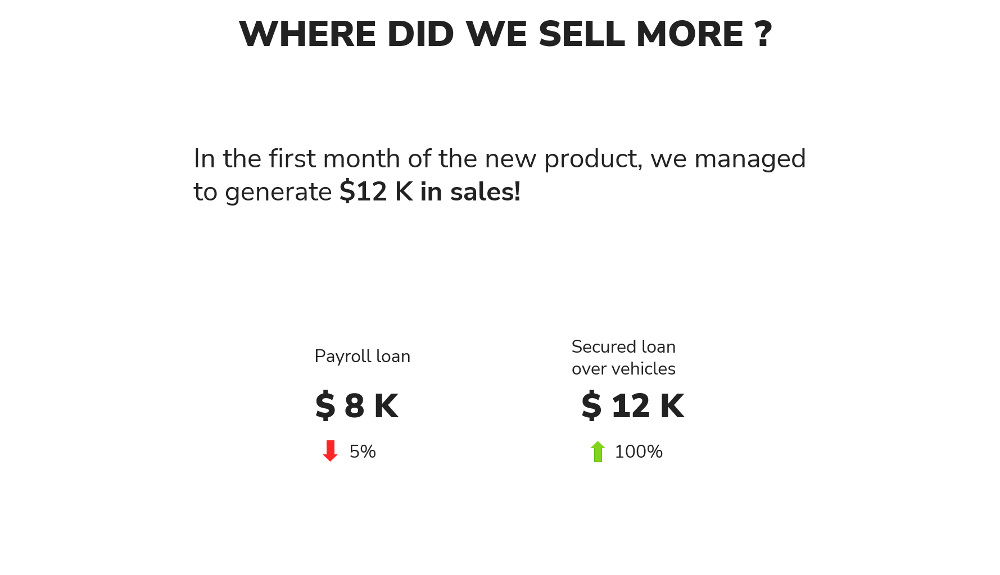
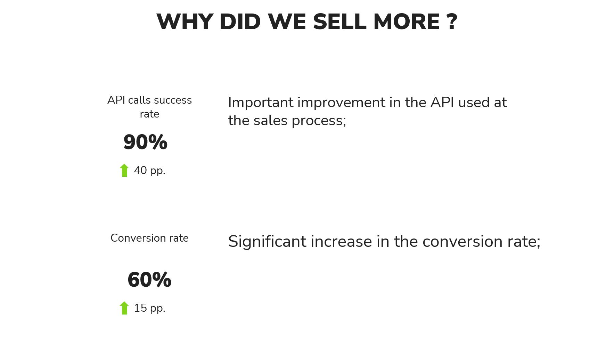

1 Introduction
This article discusses how I improved my Data Storytelling process within my presentations and reports delivered to two of the largest commercial banks in the Brazilian market. I try to share what I learned in this process, and I give some tips that will possibly help you to build more intuitive, captivating, clear and effective data reports.
In summary, we will discuss in this article the following tips:
- Data Storytelling is about telling stories through data;
- Stories have structure, use these structures in your favor;
- Avoid sharing too much attention with long texts on your slides;
- Trace relationships between your data;
- Build your story around a main message;
- Deliver your story at small pieces;
Most of this knowledge was built through intense research, reflection and planning about my presentations, and later, getting feedback, and making small adjustments here and there.
As you might expect with every great work like this, it also involved other peoples. During this process, I received help and feedback from my co-workers. Specially from Andressa de Souza Freitas and Guilherme Gomes. I also had great help from the UX Designer Alê Fernandes. Most of the knowledge presented here, I learned in practice with Alê. This knowledge revolutionized the way I build my presentations, and for that I am immensely grateful to her ❤️.
All data, charts and images shown in this article are merely illustrative. All numbers shown were randomly generated by a computer! Therefore, they do not represent the actual data of TakeBlip or the comercial banks involved in any way or dimension!
2 Summary of the structure of this article
In Section 3 I provide more context about these reports that I delivered to two of the largest comercial banks in the Brazilian market. What was the usual format of these reports ? What were their main problems and limitations ?
But from Section 4 and on, I start to discuss about how I improved these reports. You will notice that most of these improvements are concentrated in two areas:
- build a presentation that is simple and clear;
- build a presentation that has a good structure, that is, a structure that helps you to tell a story through your data;
Section 4.1 provides two tips that help you bring simplicity and clarity to your presentation, in addition to discussing why long texts on slides are so perverse for your viewers’ attention.
At Section 4.2 I discuss some tips on how to form the content of the presentation, more specifically, content that helps you build a story in your presentation.
At Section 5, we take the tips that we discussed so far in the article, and we try to apply them to the slide shown in Figure 3, with the objective of demonstrating how these tips can improve your presentation.
Lastly, at Section 6, we discuss structure a lot. More specifically, I discuss two examples of frameworks that can serve as guides. They provide a simple foundation that you can use to build your story.
Anyway, let’s move on…
3 How was this report before ?
At the time, we were building a monthly report containing several indicators and graphs that showed the current status and recent evolution of the banks services and products offered within the WhatsApp channel.
However, the format of this presentation was problematic. We brought a monumental amount of information to the bank. The presentation usually had around 40 different slides, with approximately 36 charts and 70 different indicators. Furthermore, we tried to present all this volume of information in a meeting of just 1 hour.
The end result was a presentation that brought a monumental volume of information, however, which also brought a very small volume of insights and new business ideas for managers.
In Figure 1 we have a representation of one of the several slides of this presentation1. Imagine that this presentation had around 40 slides similar to this one:
Note that this slide looks more like a dashboard page than a report showing the latest trends in the products and services of the bank, or, on the financial market as a whole.
This is very important! If your presentation has a lot of different indicators scattered around the page, without contextualizing them, without relating them to each other, without bringing out what they mean together, this presentation will likely look very similar to the dashboards you already produce for your client.
With that in mind, what is your customer’s incentive/motive/reason for attending your presentation? In other words, if your presentation shows the same graphs/indicators that your dashboards show, your client has no incentive/reason to watch your presentation. Because there is nothing in your presentation that is new, or any information that your client does not already have direct access to.
4 How can we improve?
Now that you have a sense of the size of the problem that the previous versions of these reports represented, over the next sections of this article, I will discuss some essential tips that demonstrate how we can improve the presentation model shown in Figure 1.
In my understanding, a good part of the success in data storytelling can be summarized in two actions, or two main objectives:
- Avoid items that distract our viewers’ attention;
- Build a captivating story for your presentation;
The first item above is more related to the clarity and simplicity of the presentation, while the second item is more related to the content and structure of the presentation.
Let’s start with the first item…
4.1 A constant war for attention
When we’re presenting something, we’re constantly battling for our viewers attention. This is a hard battle, not only because we can (unintentionally) attract attention to the wrong places, but also, because there are so many sources of distraction in the modern world (e.g. cell phones, emails, etc.)!
A good data storytelling depends on telling a captivating story that manages to capture the attention of your viewers. Therefore, the next sections will focus a lot on tips that contribute to this capture, or that help you not to dissipate, reduce or disturb the attention of these spectators.
4.1.1 Why you should avoid long text on your slides?
Try to be parsimonious in your slides! That is, try to include as little information as possible within it. If you need to convey a lot of information on a single slide, then try to incorporate most of this content into your speech, and as little of it as possible in written form on this slide. In general, avoid including very long texts in your slides as much as possible.
It’s weird to think about, but generally, managers will jump in and watch your presentation because they’re interested in what you have to say about their business. Therefore, your slides are only support material, they must be secondary, a supporting element of your presentation. Because the main piece of the presentation should always be your speech and the story you want to tell through it.
See the slide at Figure 2 as an example. The main problem with this slide is that it divides the viewer’s attention a lot.
When presenting a slide, your viewers have to pay attention to your speech. That is, what you are verbally communicating during the presentation. And at the same time, they also need to pay attention to the slide content. However, that long paragraph in the left corner of the slide shown in Figure 2 is problematic. Because he draws too much attention!
The long paragraph element arouses our curiosity so much that, when you saw the above slide, you (the reader of this article) probably tried to read that long paragraph, even before reading what I am describing right now in this paragraph. The same will happen with the viewers of your presentation. Meaning your viewers will immediately try to read that long paragraph.
However, reading and interpreting a long text requires some effort and a lot of attention. As a result, while your viewers are trying to read that text, they won’t be able to pay attention to other elements of your presentation. For example, in your speech.
This can be crucial, as you may bring extra information, or an extremely important connection in your speech, and they may end up missing it while they are trying to read this text. Therefore, avoid as much as possible including very long texts in your slides.
4.1.2 Deliver your story in small pieces
The human brain can process a limited amount of information at once. As a result, if you try to explain a lot of information to your viewers, in a single slide, they will end up hitting that limit 🤯, and they simply won’t be able to reason, understand or assimilate what you’re explaining.
So deliver your story in small pieces. Avoid condensing a lot of information into a single slide! Divide the content into parts, and explain one part at a time!
This helps make the content simpler, and as a result, it helps your viewers better understand what you’re talking about.
Think about this for a while. When you’re looking to learn about a complex subject (e.g. linear regression), you’re likely to divide the content into many small pieces, and learn one piece at a time. Isn’t that how you do it? So bring that strategy into your presentations as well.
4.2 Discussing stories and content
Now that we’ve seen two basic rules about keeping your viewers attention (i.e. avoid long texts and deliver your story at small pieces), let’s discuss some tips about the content of your presentation, and how to build stories with data.
4.2.1 Data Storytelling is not about choosing “the best chart”
A few analysts understand “data storytelling” as a visualization problem, or, as the science of “choosing the best chart” for your presentation, or how to design innovative, beautiful, and complex graphic designs.
However, data storytelling is about telling stories with data. Not about building charts/graphics. Choosing the right visualization to present your data, making it better, prettier and cleaner is only part of the process. A very important part, as this will help you tell your story more clearly and effectively, and thus reach a larger audience.
4.2.2 Trace relationships between indicators
Now, let’s analyze the slide shown in Figure 3. Notice that this slide, again, is very reminiscent of a dashboard page. The slide doesn’t look so captivating at first glance, as it only shows the indicators, it doesn’t build a relationship, or a story, between them.
If we pay attention to these indicators, we can identify some effects that are happening along them. And if we think about these effects a little more, we will realize that these effects are relatable! And that together, they can tell a story.
For example, notice that there is a significant increase in sales. Both in the number of proposals sold and in the total value that these proposals generated. However, notice that this growth in sales did not occur in the “Payroll Loan” product, but in the “Vehicle secured loan” product. In other words, the product “Loan Payroll” had a drop in sales at that month, however, the product “Loan with vehicle guarantee” obtained a big result that surpassed this drop by a lot, and in the end, managed to increase the bank sales as a whole.
In addition, we can also see other effects like the increases in both conversion rate and in the API (Application Programming Interface) success rate. These are also factors that contributed to the increase in sales. Because an increase in the conversion rate means that a larger portion of our customers are purchasing our products. And an increase in the success rate in the API means that we have fewer errors in the registration of sales on the platform, and this is obviously positive, as we have a smaller loss of sales due to crashes and errors in this registration system.
Note that all these relationships together help us to build a story about how sales increased at this specific month, and that’s exactly what we want to achieve. So always try to build relationships between your metrics to form a story about a key result that you perceived.
4.2.3 Build your story around a key message
Just to make this idea clear, when we identify the various effects that we described at Section 4.2.2, on the slide shown in Figure 3, it is interesting to ask ourselves: which of these various effects is the main result? In other words, which one of these effects is of most interest to the bank managers who are watching your presentation?
Certainly the increase in sales is the main effect. It is the key result. It’s the effect that most interests managers watching your presentation. So try to build your story around this result, or this main message. Use the other indicators to explain how this key result came about.
This is also very important! Every manager is very fond of hearing the word “increase in sales”. However, he is also always interested in knowing the “how was this increase generated?”. That is, he needs to know what actions were taken that generated this positive impact.
Because by identifying these actions, this manager has the ability to apply these actions to other parts of his business, and, hopefully, he can end up spreading this positive effect that you described to other areas, and, as a result, he can end up further increasing the company’s sales.
5 Putting some tips into practice
So far, we’ve discussed the following tips:
- Avoid long texts on your slides;
- Trace relationships between the indicators;
- Build your story around a main message;
- Deliver your story slowly, at small pieces;
Let’s put these tips into practice, and redesign the slide shown in Figure 3. Do you remember the relationships we described in Section 4.2.2? Remember how these relationships tell a story about increased sales? Let’s take advantage of this story to apply the tips above.
First, we established that our story should always be built around a core message. So let’s start our presentation by focusing on a single slide that makes this main message clear.

Now that we know what the main subject of the presentation is, we can start to dig deeper, and describe that subject in more detail. As a next step, we can answer the question “where did this increase in sales came from?”.
This question can be very relevant for your presentation, especially if: 1) you are presenting to several managers from different areas at the same time; 2) or also, if you are presenting to a manager higher in the hierarchy, who oversees several areas/products at the same time. Because in these cases, these managers will logically wonder where this increase in sales occurred. Was it in product x? Or was it in product y? Or area z? Etc.
Anyway, let’s answer this question on a new slide. With this slide, we make it clear to viewers that a new bank product (car loan with guarantee on vehicles) was the big star of the month, generating around $12 thousand in sales in the first month, even surpassing the sales value of the already consolidated product (payroll loan).

The next question we need to answer is “how?”. How was this super result in sales generated? We discussed this in Section 4.2.3 that after discovering such an important result, managers will certainly be interested in understanding how this result was generated, so that they can spread this positive effect to other areas of the business.
Remember that we have two main effects discussed in Section 4.2.2 that explain how this improvement in sales occurred. Let’s list them clearly and succintly on a new slide:

Please, try to use your speech to elaborate the two effects above (“What was the problem with the API, and how did we overcome it?”, “How is this an improvement?”, “What is a conversion rate? And how does it affect the process of sale?”). Remember, try to avoid putting long texts in your presentations as much as possible, and try to give more details or answer your viewers questions through speech.
With these three slides we have a much more interesting structure and content for our presentation as we are telling a story about how we sold more in a given month.
Note that the structure of the presentation (1: main message, 2: where? , 3: how?) helps us to cohesively create the content and this story. In the next sections of this article, I’ll discuss two other frameworks that can help you structure and cohesively tell your stories.
6 Stories have structure, use these structures to your advantage
Over the next sections, I’ll show you two examples of structures that are quite common in stories. These structures serve as a guide as you build your story. They will help you a lot to organize your ideas in a clear and effective format.
6.1 The four C’s model
The four C’s model refers to these four words in Portuguese:
Contexto, Conflito, Consequência, Conselho.
These four words can be translated into Context, Conflict, Consequence, Advice, and they help you bring a consistent structure to your story. In addition, these words also help you to stir up your viewers’ emotions a little, and, with that, capture their attention more.
By following this model, your story will always break down into four parts: context, conflict, consequence, and advice. Precisely in this order. This framework revolves around a major problem or conflict that you have identified in your client’s business.
The interesting thing about this structure is that you can stake several problems in sequence. As a result, you have a block of 4 C’s (context, conflict, consequence and advice), followed by another block with 4 more C’s (context, conflict, consequence and advice). Or, you can start the presentation with a context, and then two blocks of 3 C’s (conflict, consequence and advice) in sequence.
Anyway, enough talking, and let’s describe in more detail each one of these four parts of this structure.
6.1.1 Start with a context
Therefore, when following this model, your story will always start with a context. Something just to contextualize the viewer on what the current state of the business is.
Remember, the 4 C’s model is built around a conflict, or a core problem. Bearing this in mind, if, for example, the conflict that you are going to discuss in your story is a problem that affects the service for selling card machines, it is important that you focus on giving an overview about the service for selling card machines.
In other words, avoid bringing contexts in this part that are not related to the problem/conflict that you will talk in the next section. Because this conflict is the central part of the story.
6.1.2 Present a conflict/problem/challenge to be overcome
Then you must show a conflict. That is, a problem, challenge or barrier that you have identified in the product/service you are looking at. This is where we’re going to play with the viewer’s emotions a bit, and use that to our advantage to capture their attention.
Let’s reflect on this a little. By putting words like “problem”, “care”, “challenge”, “alert”, especially in bold letters, in addition to including emojis that convey this purpose, such as ⚠️ and ⛔. This quickly draws anyone’s attention, as it gives you a sense of danger, and you enter a state of alert.
If you think about it a little more, you’ll probably realize that you have that same instinct when you’re watching a movie, or a series, and the hero of that story suddenly gets into a dangerous situation. You quickly pay more attention to what is happening, because you want to see how the hero is going to get out of this hole, or you are really rooting for him to survive and overcome this problem.
When we present an issue about the product/service you are reviewing, we want to cause the same effect on our viewers. When we say that we have a challenge/problem that is affecting the company’s sales, managers quickly start to pay more attention to what you are saying, as they want to know how they can get out of this hole!
6.1.3 Hiding the problems is a bad idea
This is very important! Some analysts are afraid or apprehensive of shedding light on existing problems, and therefore, end up hiding them or omitting them from their presentations. However, you are not delivering any value to your customer that way! You are not helping your customer to solve their problems and to grow their business!
And if the problems are not solved, if they continue to exist, they will grow, and grow, until they explode, thus generating generalized chaos. The sooner you identify the problem, notify managers about it, and present possible solutions for it, the better for managers, who already leave with an action plan to solve this problem, and it is better for you too, because you are delivering value and solutions to your customer.
Therefore, a good presentation, or a good data report, is one that delivers value to your customer! By showing new business opportunities (e.g. reaching a new portion of the public with a product), and also by presenting solutions to current problems that are limiting or preventing business growth.
However, a presentation that only comments on positive points, that says that everything is fine… does not bring any value to managers. Managers didn’t hire you to tell you everything is fine. They hired you to help them discover and solve problems in their business through data analysis.
6.1.4 Present the consequences of the conflict/problem/challenge you have identified
Therefore, after presenting a conflict/problem/challenge that is affecting the business, it is important that you present the consequence of this problem right away. This helps managers to have a dimension of the size that this problem represents for their business.
It’s okay if you can’t measure in numbers the size of the impact that this conflict had on the business. Try to measure that impact as best you can. An approximate value of the impact can already bring enough clarity about the size of the danger that this conflict represents for the business.
You can also provide a range, or a possible range of the impact if you can (e.g. the estimated impact is between $20 thousand and $340 thousand). This is also a valid way of exposing the size of the problem.
If it is really impossible to measure this impact in numbers, then explain in this part, which are the points of the product/service sales process that are affected by this problem. In other words, present which are the places in the business that are being, in theory, affected by this conflict.
6.1.5 Advise your customer, present possible solutions to the problem
Okay, we present a problem, or a conflict for our viewers. We also discussed the impacts of this conflict on our client’s business. Now, we need to present possible solutions to this problem.
Therefore, understand the problem/conflict you are presenting, and try to list what would be the main solutions for this problem, and include these solutions in this part of your presentation. It’s worth explaining and discussing this issue with other co-workers as well, as they might also come up with interesting solutions that were off your radar.
It is also interesting to include a list of trade-offs for each solution, especially in terms of complexity and effort for each solution. Managers are constantly interested in this relationship, and always want to choose the solution that is simpler and faster to implement.
6.2 Character evolution as another alternative
Character evolution (or the “hero’s journey”) is a popular story structure. You start with a character, or a hero for the story, which in our case here, could be our client’s business, or a specific product of this business.
Our mission is to show how this character/hero has evolved in recent months. Therefore, this evolution structure is very suitable for year-end reports. Because these reports are interesting to show the evolution of the business (or the evolution of the character) over the last year.
6.2.1 The beginning and end of the journey
If you prefer, you can start your presentation by showing how your character was at the beginning of the journey, and end this presentation by showing how that character ended that journey.
This is an option, however, I prefer to start the presentation by showing the start and end at the same time. In this way, viewers begin the presentation with an idea of how much the business has evolved during the year. Therefore, I start by showing how the character (or the business/product) started the year, and then how he ended the year.
6.2.2 Presenting the challenges and pitfalls
In every business/product, whatever it may be, we always face major challenges that can threaten the success, or limit the evolution of this business/product.
Therefore, along any journey, we always face challenges and setbacks, and we apply actions to try to overcome these challenges. By overcoming these challenges, we can hopefully generate the evolution and improvement of this business/product. That is, reaching the end of this journey with a better, more robust and more profitable business/product.
All of this means that “how we get through the middle of the journey” can be much more important/interesting than the beginning or end of that journey. Therefore, reserve a part of your presentation to present the main challenges we faced during this journey, and how we overcame them.
6.2.3 If possible, take the opportunity to value your team’s work
At this particular point in the presentation, you usually have a very interesting opportunity! Because you can deliver value to your customer and, at the same time, also value the work of your team, especially if this was the team that discovered the challenges, and applied the actions that overcame the challenges you are describing.
This is a golden opportunity! Therefore, if you have this opportunity in your hands, take advantage of it! Remember that you don’t work alone. You’re almost always working within a team of people, and it’s always important to know how to value your colleagues’ work.
However, this opportunity will not always appear for you. Perhaps the challenges you are presenting were overcome in another way, by another team that you do not know, or that you do not have a direct connection with.
6.2.4 Reinforce the results achieved
It is also useful to end your presentation by showing a summary of the results achieved during the year. This could be a simple bulletpoint summarizing the main results. This helps to jog your viewers’ memory, showing them not only how we ended last year’s journey, but also, how we begin next year’s journey 😉.
6.2.5 A summary of the structure
Therefore, over the previous sections we discussed an idea of structure that would be similar to a “character evolution”. In the end, we have a story that follows the sequence below:
- quickly present how we started and how we ended the journey;
- present the main challenges we faced during the year;
- what were the solutions we applied to solve the problems;
- reinforce the evolution of the character, by showing again the results achieved with the solutions above;
Footnotes
It is worth remembering that the numbers and graphs presented in this image are merely illustrative, and were defined in a completely random way.↩︎